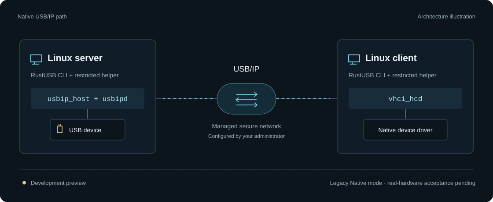
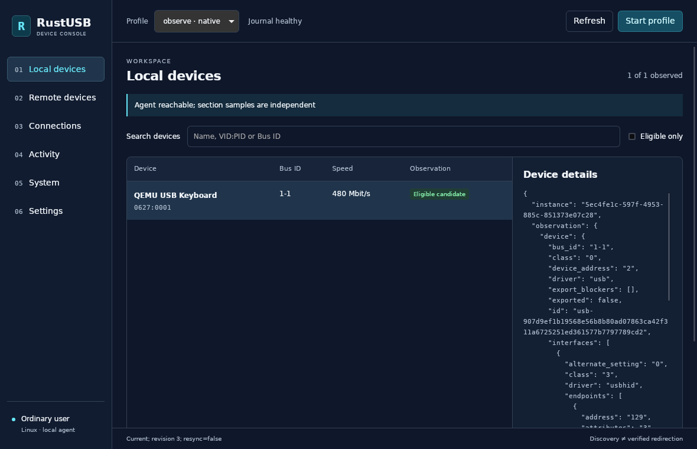

Device-level redirection
Forward USB requests so the client’s native driver can use the device. This is the USB/IP data path.
Linux development preview
Discover, share and connect USB devices with a Rust CLI.
Linux USB/IP with optional TLS brokers and Rust servers.
Ubuntu 22.04 / 24.04 Rust 2024 Edition MIT

Use Linux’s kernel path for Native sharing. Explore virtual devices and the experimental USBFS adapter with the optional Rust server.
Default backend
RustUSB handles discovery, policy and connection management. Linux usbip_host, usbipd and vhci_hcd carry the Native USB data path.
# After administrator setup
rustusb discover 192.0.2.1 --json
# Use the actual returned Bus ID
rustusb attach 192.0.2.1 1-2
rustusb sessions
# Use the port from sessions
rustusb detach 0Example address and identifiers. Requires approved devices, a running helper and a managed secure network.
Optional · rust-backend
The Rust server provides fixed HID and CDC ACM profiles. Use them to explore protocol behavior and Linux VHCI interoperability without exporting a host USB device.
cargo build --release --locked \
--workspace --features rust-backend
target/release/rustusb \
virtual-server --help
# Listen on loopback for local exploration
target/release/rustusb virtual-server \
--listen 127.0.0.1:3240The server is a developer interface. See the guide for control input, profiles and guest setup.
Experimental · physical-nusb
A restricted helper grants device file descriptors to the ordinary-user server. Persistent original-state records block new grants while a previous grant remains unresolved.
cargo build --release --locked \
--workspace --all-features
target/release/rustusb \
physical-server --help
# Administrator-only record inspection
sudo /usr/local/bin/rustusb \
--json physical-pendingRequires an installed all-features helper and explicit device policy. Original-driver recovery requires a separate opt-in policy and unchanged configuration.
Forward USB requests so the client’s native driver can use the device. This is the USB/IP data path.
Keep the CLI unprivileged. Approved users, device identities and remote endpoints are managed by a restricted helper.
Watch local USB changes and refresh authenticated remote catalogs. Inspect sessions and data-link health through the shared application service.
The Linux desktop preview uses the TUI’s application worker for device inventories, fixed-profile actions, connections and checked preferences. It runs as an ordinary user.

Development evidence is linked to its tested revision. Software checks and emulated devices are recorded separately from real hardware compatibility.
The shared observer uses kernel USB notifications and fresh metadata scans, with bounded views and explicit resynchronization. Software is tested at clean c0346d6; emulated observation is locked to clean f66da6b.
Default and all-features builds each boot one guest. The actual ordinary-user CLI observes keyboard insertion, interface driver changes, removal and reinsertion with a new generation. Complete batches and the actual worker exit are checked. These are local inventory tests; USB/IP redirection and real hardware retain separate evidence.
Both binaries pass SIGINT, real stdout backpressure with SIGTERM and a closed-output error. Earlier hostname fallback, authentication limits and the full acceptance history keep their tested versions and boundaries.
The observation guide explains live inventory and stale data. The application service provides independent jobs and session audit; data-link health measures the actual connection. Metadata and logs do not prove USB release.
Continuous remote catalog observation has separate validation: 903 software executions and two Native paired QEMU runs. A busy entry disappearing does not mean physical unplug, and an observer join does not prove USB cleanup.
This is a development preview. Real-device acceptance is pending, and discovering a device does not establish compatibility.
Build the preview, list local devices and inspect readiness. Native sharing needs additional administrator setup.
Ubuntu 22.04 / 24.04 · Git · Rust via rustup · native build tools. Cargo selects the pinned toolchain.
Full build instructionsgit clone https://github.com/tiansongyu/usbip-client.git
cd usbip-client
cargo build --workspace --release --locked
./target/release/rustusb devices
./target/release/rustusb doctorUbuntu preview package guide · CLI/TUI, restricted services and optional GUI. Services require explicit administrator provisioning.
Source build shown. Preview packages are also built by GUI CI.